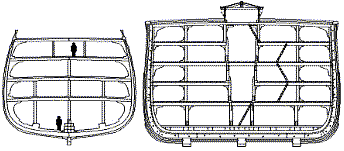
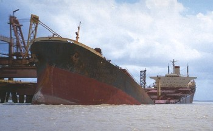
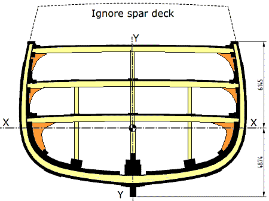
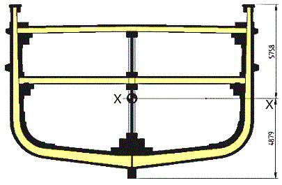
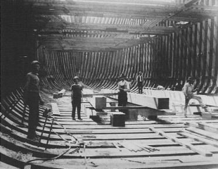
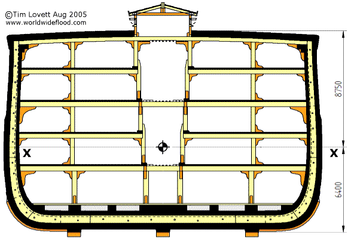

|
Big but not impossible |
 The Great Republic (1853) alongside Noah's Ark (2500BC) |
To begin an assessment of hull strength for Noah's Ark, we will look at the reliable records of large wooden vessels, and use similar design strengths. The following simple analysis ignores still water bending moment, which is expected to be trivial compared to wave bending moment [2] anyway. See Still Water Bending Moment and Wave Bending Moment

A ship can break in half. Bulk carriers are not designed to have all the weight in the middle...
The largest clipper on record is the 335ft Great Republic, built by the Donald McKay shipyard in 1853 [1]. Before it's maiden voyage, the ship was accidentally burned and written off, then rebuilt with reduced decking and rigging. Framing was oak (from New Hampshire and Virginia), and up to 22 inches deep by 15 inches thick. Inboard the frames on each side were 90 iron straps spaced 4 feet apart, that were typically 1"x4" and 36 ft long. Bracing will be assessed later under shear and torsion.

Including all longitudinal elements in the midship section shown above, a representative stress can be determined on the basis of ABS rules for wave bending moment. Here, L=335ft, B=53ft, D=39ft
Graphical determination by CAD: Ixx = 2.16E14 mm^4
By ABS rules,
Mws = -21075tfm (-2.065E+11Nmm)Sagging
Mwh = 18192tfm (-1.783E+11Nmm)Hogging
Stress at extreme bottom of keel;(Hogging compressive) = 4MPa (Sagging, tensile) = 4.7MPa
Stress at extreme top rail (Hogging,tensile) = 5Mpa (Sagging, compressive) = 5.9MPa.
Max fiber stresses 4 to 6 MPa, (580 to 870psi)

Steel shortages during the First World War forced shipbuilders in the US to return to wood for the construction of supply ships. With the extensive forest reserves of North America, the ships were faster and cheaper to build than equivalent steel ships. The midship section above shows an interesting detail where the keelson is reinforced with structurally significant longitudinal bulkhead reaching to the weatherdeck. The trend towards thicker and deeper keelson assemblies to counter water pressure uplift and hogging and sagging stresses, leads logically to a solution like the one shown here. Diagonal bracing (wood) was fixed to each side of the longitudinal elements on the bulkhead to counter shear. Comparing this ship to the Great Republic built 60 years earlier, it is clear that the substantial strakes in the top deck improve the position of the centroid (the center of area is higher). Early ships were too frail near the weatherdeck for the hull to function as an effective girder.

Typical WW1 wooden steamship. Image public domain (US gov. archives)
Using modern ABS rules to determine wave loads (wave bending moment), and including all longitudinal elements in the midship section to determine the geometric section properties (section modulus, second moment of area), a representative stress can be determined as follows;
Typical vessel dimensions L/B/D = 290/49/35 ft = 88/14.9/10.7m
Then by ABS rules, assuming a block coefficient of 0.8;
Mw sag = -15065tfm (-2.065E+11Nmm)Sagging
Mw hog = 13871tfm (1.783E+11Nmm)Hogging
Using a scaled CAD drawing, second area moment Ixx = 1.79E14 mm^4
Stress at extreme bottom of keel;(Hogging, compressive) = 4.9MPa (Sagging, tensile) = 6.6MPa
Stress at extreme top rail (Hogging, tensile) = 5.7Mpa (Sagging, compressive) = 5.6MPa.
Max fiber stresses 5 to 7 MPa, (725 to 1015psi)
Note: These stress values are quite similar, and very conservative as expected. Considering the high quality of marine timbers, these stresses are easily within the limits of standard building codes, which are also very conservative. Actual failure stresses of such wood in a tensile loading would reach 10 to 15 times this value, a massive safety factor compared with the design of steel ships. However, the lack of evidence of extreme fiber tensile failure indicates these carvel hulls were not limited by axial stresses induced by primary bending loads, but acted to some extent as a "bundle of reeds". In other words, they were more likely shear limited before they approached the tensile limits of the extreme upper or lower elements in the midship section. In spite of this, by following similar design principles, we will match the stresses of Noah's Ark with these sailing ships by scaling the wave loads according to ABS wave bending moment rules. (i.e. proportional to L^3.5 and B^1). The next step will be to ensure shear resistance is attained which is at least equivalent to the iron bracing of a clipper. Noah's Ark has the advantage of not carrying sails, but on the other hand, the proportions indicate it was designed for heavy seas at some point.

In the above section, longitudinal elements are shown in black, structural framing in yellow, knees and non-structural woodwork shown in orange.
According to CAD drawing, second area moment Ixx = 7.94E14 mm^4
Ark dimensions according to the common (18") cubit; L/B/D = 450/75/45 ft = 137/23/14m
Then by ABS rules, assuming a worst case block coefficient of 0.9, wave bending moment is;
Mw sag = -656608kNm (-6.566E+11Nmm)Sagging
Mw hog = 637625kNm (6.376+11Nmm)Hogging
Stress at extreme bottom of keel;(Hogging, compressive) = 5.1MPa (Sagging, tensile) = 5.3MPa
Stress at extreme top rail (Hogging,tensile) = 7.0Mpa (Sagging, compressive) = 7.2MPa.
Max fiber stresses 5 to 7 MPa, (725 to 1015psi)
The proposed midship section for Noah's Ark indicates a level of stress similar to large wooden ships, at least in terms of simple primary bending loads. A heavy roof plays a significant role in raising the neutral plane (X-X), and provides some chance of countering stress concentrations at the junction between roof (weatherdeck) and hull wall. A "strong roof" is described in one of the earliest (extra-Biblical) flood records, a small fragment discovered at Nippur. [3]
1. Crothers, William L., The American-Built Clipper Ship 1850-1856. Characteristics, Construction, Details, International Marine - McGraw Hill, 1997. Great Republic midship section according to Description of the Largest Ship in the World, the New Clipper Great Republic, of Boston, built and owned by Donald McKay, written by a sailor. Boston: Eastburn's Press, 1853. Return to text
2. ABS Rules. American Bureau of Shipping. See Wave Bending Moment http://www.worldwideflood.com/ark/hull_calcs/wave_bm1.htm Return to text
3. There are other Babylonian flood stories, such as a small fragment discovered at Nippur and undoubtedly of very early date speaks of a flood 'sweeping away all mankind at once' and of someone building a 'great ship . . . with a strong roof in which vessel 'beasts of the field, the birds of heaven and . . . the family' were saved. See Flood Legends. Return to text
www.worldwideflood.com